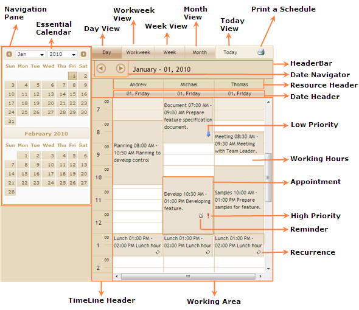

The following illustration shows the structure of the Schedule control:

Figure 64: Structure of Schedule Control
Elements and Features of the Control
The elements and features of the control are:
· Appointments: A specific time interval defined by the user in the Schedule control refers to an appointment or an event. An appointment may contain properties like Subject, Location, Description, StartTime, EndTime, and so on.
· ViewStrip Toolbar: it provides options to view the day, work week, and month Schedule. It also provides options to move the day’s Schedule and print a Schedule.
· Header Bar: It displays the date/date range and also displays navigation buttons.
· Date Header: It displays the date in the format of "dd, ddd".
· Navigation Pane: Essential Calendar displays in the navigation pane.
· Timeline Header: It displays the following time lines:
12 Hours Mode => 12 AM to 11.59 PM
24 hours Mode => 0 to 23.59
· Priority: If the appointment has high/low priority, the priority image is displayed at the right corner of the appointment cell.
· Reminder: If the appointment has a reminder value a bell shaped reminder image is displayed on the right corner of the appointment cell.
· Recurrence: If the appointment is a recurring appointment then the recurrence image will be displayed in the right corner of the appointment cell.
· Working Area: Working hours is highlighted in white color.